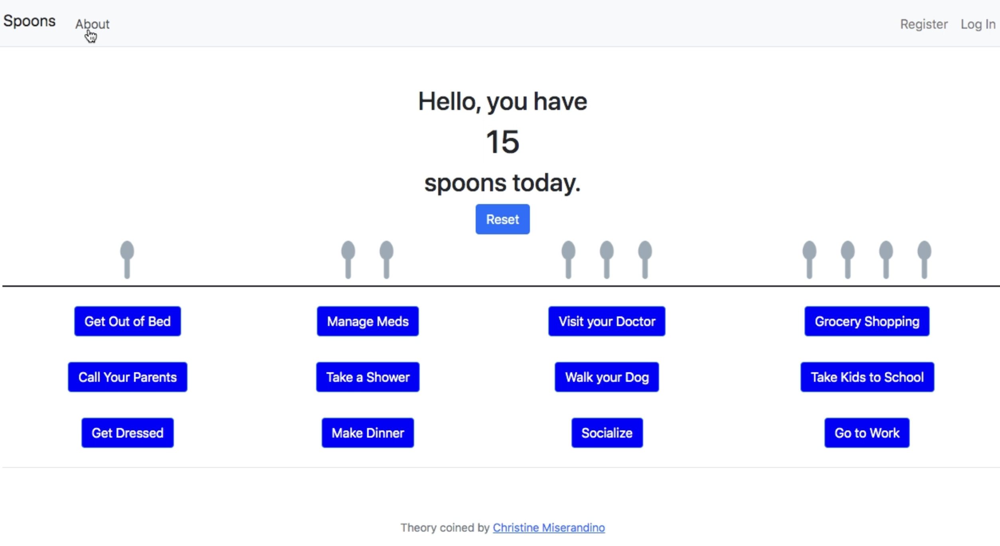
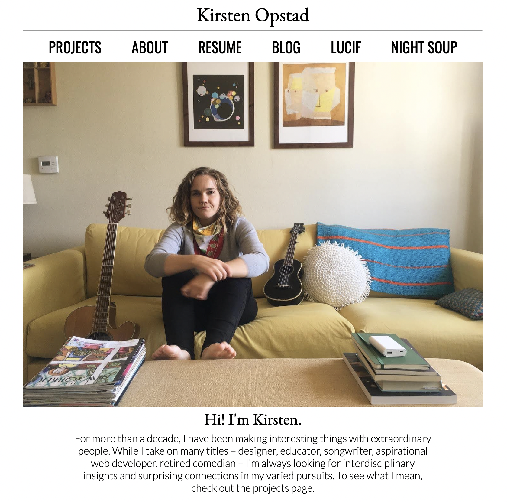
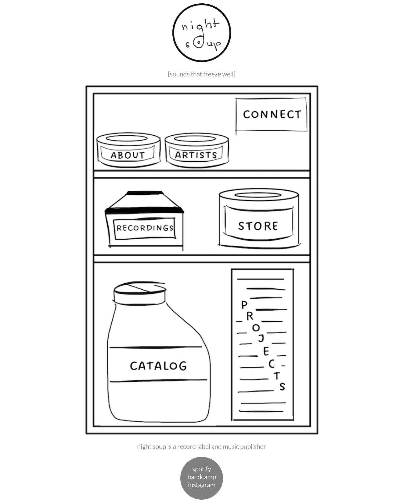

About
Hi! I'm Kirsten. I'm currently enrolled in a full time full stack engineering program at Epicodus.
I'm a huge fan of Brene Brown's work around Living Into Our Values, in the workpace and in one's personal life. In the spirit of vulnerability, I share my core values to give some insight into who I am and what's important to me:
- Intentionality
- Authenticity
- Creativity

- Interests
- Learning to Write Better Code
- Solving Problems with Creativity
- Being a Tech Translator
- Hobbies
- Writing Music
- Camping & Hiking
- Reading Poetry & Fiction
- Skills
- HTML & CSS
- Git Workflow
- Procedural Programming
Portfolio
Web Development
Spoons
A Tool for Expanding Compassion
Spoons is a web-based application using JavaScript, Python, and SQL.
Powered by the dynamic spoon counter deducts spoons based on activities user selects, simulating the experience of expending energy throughout the day.
Registered users are able to change/update "spoon values" of activities, add new activities to their profile and change their "daily spoon count." Preferences are stored/updated in a SQL database.
Prompted by a conversation with a friend about communicating one's capacity to their partner, the purpose of Spoons is built to help expand compassion between partners, roommates, collaborators & colleagues.
About.KO.com
A hybrid personal and professional portfolio
About.kirstenopstad.com is a portfolio website built using HTML & CSS.
Built with from scratch in an effort to capture the breadth of my experience as a designer, musician and human being while also practicing skills acquired earning a certificate in Responsive Web Design.
The site showcases professional design consulting projects alongside collaborative music project, a resume alongside a personal timeline of the last fifteen years and seeks to honor the intersecting and interdisciplinary paths followed in the past fifteen years.
Night Soup
A Record Label for a Different Time
Night Soup is a website for a record label built using HTML & CSS
A site for a record label in a post-label era, Night Soup is designed to hearken back to a bygone era -- both in music and in web development.
Featuring a hand-drawn illustrations and old school image mapping with new school responsivity. Night Soup features "sounds that freeze well," and is built to invoke vintage aesthetic sensebilities in the spirit of low-fi, alt-folk and independent music.